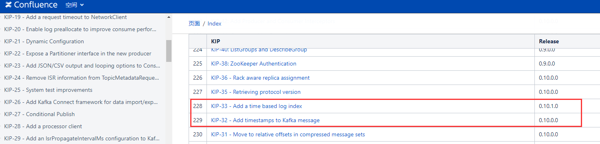
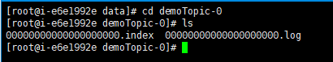
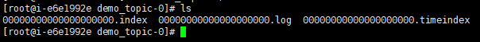
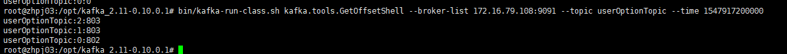
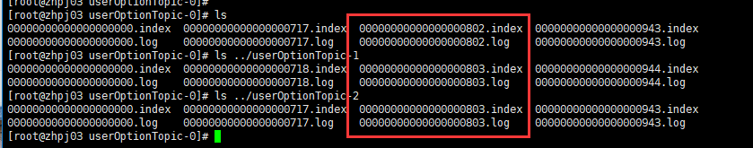

Kafka Timestamp
简述Kafka在时间戳上的改进历程；实现基于时间戳操作Offset
Timestamp来龙去脉

Message Body
出于对日志保存、日志切分和Kafka Streaming的改进和优化，Kafka从0.10.0.0版本起，在消息内新增加了个timestamp字段；时间戳的类型有两种：可以设定为producer创建消息的时间(CreateTime)，也可以设定为该消息写入Broker的时间(LogAppendTime)。默认为CreateTime，可通过参数message.timestamp.type 实现Topic级别的类型更改，Broker级别的时间戳类型参数为log.message.timestamp.type。
有关Kafka Message新增时间戳的相关细节，可详见Kafka官方Doc [KIP-32 - Add timestamps to Kafka message](https://cwiki.apache.org/confluence/display/KAFKA/KIP-32+-+Add+timestamps+to+Kafka+message)
Log Segment
在Kafka 0.10.1.0以前(不包含0.10.1.0)，对于一个Topic而言，其Log Segment是由一个.log文件和一个.index文件组合而成，分别用来存储具体的消息数据和对应的偏移量；如下图所示：

从Kafka 0.10.1.0开始，对于日志文件，新增一个.timeindex文件，即每个Segment分别由.log、.index和.timeindex这三个文件组成。

有关Log Segment 新增.timeindex相关细节，可详见Kafka官方Doc KIP-33 - Add a time based log index
根据时间戳查找消息
在0.10.1.0以前，Kafka提供了通过指定Offset来消费消息(若不清楚如何实现，可参考Kafka实践之Consumer)。讲道理，在那时候这个功能其实是比较鸡肋的，因为通常每天Kafka的消息量都会比较大，假如需要获取到前一天凌晨三点到五天之间产生的所有消息，维护人员压根不知道这个时间段内Offset的范围。当然这个问题从0.10.1.0以后将不复存在，接下来就来讨论如何实现按照时间戳查找消息。
以Python API为例，从0.10.1.0以后新增加了一个offsets_for_times方法(Java API对应的方法为offsetsForTimes)，可以通过给定时间戳获取每一个Partition上大于等于该时间戳的最早的Offset值。这句话读起来可能比较拗口，举个例子：统计2018-12-30 17:00:00 到2018-12-30 20:00:00期间，Topic(topic_demo)的消息偏移量范围
1 | import time |
对于offsets_for_times的返回结果是一个{TopicPartition: OffsetAndTimestamp}，对于不同的TopicPartition(topic, partition)，其对应的OffsetAndTimestamp(offset, timestamp)通常都会是不一样的，如果找不到满足给定时间的最早消息，则返回None。
若想实现消费指定时间范围内所产生的消息，源码详见GitHub
Kafka.tools.GetOffsetShell
查看消息偏移量是平时使用和维护过程中一个比较常见的操作；Kafka提供了一个内置的工具脚本来满足这方面的需求，代码实现逻辑详见GitHub，在这里来聊一下Kafka提供的GetOffsetShell工具：可以通过下载Kafka相应版本的源码，在core\src\main\scala\kafka\tools下查看该脚本的源码。该命令的使用方法如下
bin/kafka-run-class.sh kafka.tools.GetOffsetShell --broker-list <address:port> --topic <string> --time <param>
broker-list、topic和time是三个必须参数，与此同时还可以指定partitions；如果不显示的指定partition，则默认查看所有分区对应的offset信息；在这里主要讨论一下参数time：
time可以有三种值，分别为-1，-2和一个时间戳；-1代表latest，-2代表earliest，这两个是比较好理解的，可以分别执行一遍命令就能实现查看指定Topic的有效Offset的最大范围。
需要注意：当time的值为一个时间戳时，这里返回的结果并不是上文中提及到的那种含义：即就是并不是返回各Partition内大于等于当前timestamp的最早那条消息的offset值，而是返回当前时间戳的消息所在的Segment中最早的那条消息的Offset值，说白了就是该时间戳的消息在那个Segment上， 就返回该Segment的文件名(把文件名前无效的零都去掉)。

